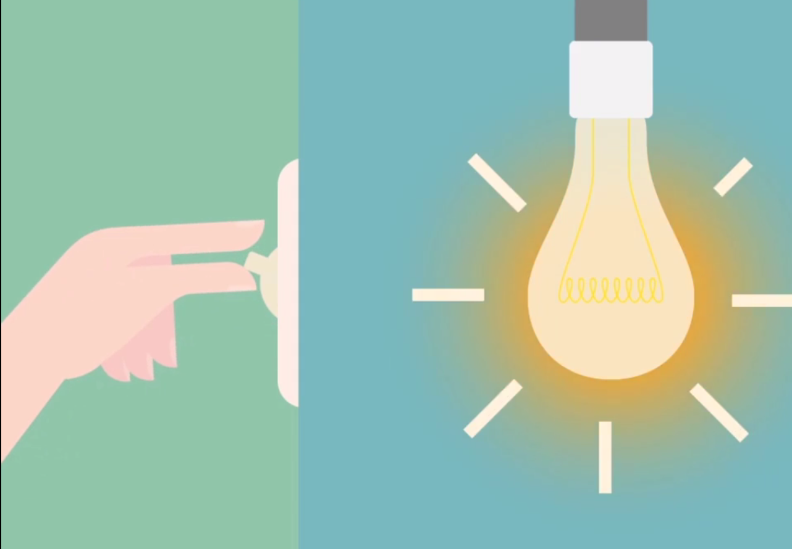

Microinteractions

by Juan Vanni
Microinteracción != Animación
Interacción
Evento
Evento Feedback
"micro"
Lo pequeño. El Detalle.
Pueden hacer la diferencia entre una experiencia agradable y una que genera frustración.
La atención a estos detalles hacen la diferencia entre un producto que enamora y uno más de la manada.
Ayudan al usuario a:
- Visualizar los resultados de sus acciones.
- Comunicar un estado.
Animaciones en microinteracciones.
- Ayudan a dar sentido de continuidad y dirección.
- Mejoran la sensación de manipulación.
- Dan calidez y hacen sentir a la UI como algo más real.
- Sirven para llamar la atención, hacer foco en un area en particular.
Es fácil caer en errores.
- No deben sobrepasar los 400ms.
- No exagerar porque saturan facilmente.
- Evitar inconsistencias.
SPA
Hacer comprender al diseñador amigo que la pantalla no se refresca nunca más.
Con F5 sí.
Material Design
Todo se mueve.
Conga